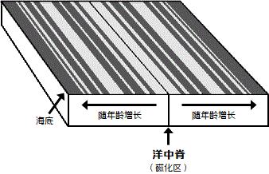
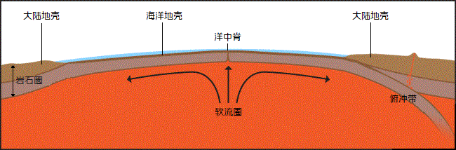

返回地质年代表
20世纪40年代和50年代的地球科学的进步和技术的进步与对地球的理解紧密相关，这使地质学家们逐渐形成了一种观察世界及其运行方式的新方法。我们提供了关于我们认识地球的历程的一些信息，并简要概述了它背后的理论。
学说的历史
仔细观察地球往往会发现，大多数大陆似乎可以像拼图一样拼在一起：西非海岸线似乎可以与南美洲东海岸和加勒比海紧密贴合;太平洋的两岸也出现了类似的情况。如果将水下大陆架而非海岸线进行比较，这种契合就更加引人注目了。1912年，阿尔弗雷德·魏格纳（1880-1930）也注意到了这一点并且提出了地球上的所有大陆曾经被挤压为一个单独的原始大陆，他称之为“盘古大陆”（意为“所有土地”）。随着时间的推移，它们漂移开来，形成如今的分布。他相信，盘古大陆在大约3亿年前的石炭纪晚期开始解体并漂移开来之前都是完整的。但是，魏格纳的假说缺乏一种地质机制以解释大陆如何像他所提出的那样漂过地球的表面。
为了进一步发展他的大陆漂移学说，魏格纳在搜索证据的过程中遇到了一篇古生物学论文。这篇论文提出，一条陆桥曾经连接着非洲与巴西。这条陆桥试图解释著名的古生物学发现，即在南美洲和非洲发现了同一时期的相同的植物和动物化石。在欧洲和北美洲、马达加斯加和印度发现的化石也是如此。其中的许多生物并不能跨越现存的浩瀚的海洋。魏格纳的大陆漂移学说似乎比连接所有大陆的陆桥更为可信。但这本身并不足以支撑他的观点。另一个支持大陆漂移学说的发现是宾夕法尼亚世大陆冰川作用的证据。冰川的刮擦在陆地表面上留下的痕迹表明非洲与南美洲在那个古老的冰河时代就曾紧密贴合。相同的刮擦图案可以沿南美洲和非洲南部的海岸发现。
魏格纳的大陆漂移假说提供了山脉的形成（造山运动）的另一种解释。他当时讨论的理论是“收缩理论”，该理论认为，地球曾经是一个熔融的球，在冷却过程中，表面炸裂并折叠起来。这个想法的一个大问题是，所有的山脉的年龄都应该大致相同，但这显然是不正确的。魏格纳的解释是，随着大陆的移动，大陆的前缘会遇到阻力，因此遭到挤压并向上折叠，在漂移大陆的前缘附近形成山脉。他引用了北美洲太平洋海岸的内华达山脉和南美洲海岸的安第斯山脉。魏格纳也提出，印度次大陆向北漂移与亚洲大陆发生碰撞从而形成了喜马拉雅山脉。
魏格纳最终提出了一种大陆漂移的机制，主要集中在他的论断上，即地球自转产生了一种向赤道的离心力。他相信盘古大陆在南极附近形成，并且地球的离心力导致这块原始大陆四分五裂，由此形成的大陆漂向赤道。他称之为“离极力”。这一观点很快遭到了科学界的普遍反对，因为据计算，地球自转产生的力实际上不足以移动大陆。魏格纳也尝试用太阳与月球的引力解释美洲的向西漂移，但这种观点很快也遭到了反对。魏格纳无法对引起大陆漂移的力作出充分的解释，而且当时的人们普遍认为地球是坚固不变、无法移动的，这使得他的理论在遭到了科学界的否定。
1929年，大约在魏格纳的观点开始被否定的时候，阿瑟·霍姆斯详细阐述了魏格纳的许多假说中的一个；地幔对流说。这种观点基于这样一个事实:液体被加热时，其密度将会降低 —— 这些密度较低的液体上升到表面，等到冷却后再次下沉。这种反复的加热和冷却会产生一股足以使大陆移动的对流。阿瑟·霍姆斯认为，这种热对流就像一条传送带，上升流的压力可以使一个大陆分裂，然后在对流的携带下迫使破碎的大陆向相反的方向移动。这种热对流就像是一条传送带，上升流的压强可以使一个大陆四分五裂，然后迫使破碎的大陆在对流的作用下向相反的方向移动。这种观点在当时并没有受到多少关注。
直到20世纪60年代，霍姆斯的想法才得到重视。对海底更深入的了解，以及洋中脊、平行于洋中脊的地磁异常、以及岛弧和海沟同时出现在陆缘附近等发现，表明对流可能确实起到了作用。这些以及其它更多的发现促使哈里·赫斯(1962)和R·戴茨(1961)发表了基于地幔对流说的类似假设，现在被称为“海底扩张”。这一观点与霍姆斯在30多年前提出的观点基本一致，但现在已经有了更多的证据来支撑并进一步发展这一观点。
机制
板块构造的主要特征有：
- 地球的表面覆盖着一系列的地壳板块；
- 海底在不断地移动，从中心向外扩张，在边缘下沉，然后重新形成；
- 板块下方的对流使地壳板块向不同的方向移动；
- 驱动对流的热源是地幔深处的放射性物质；
二战期间声波深度记录的进步以及随后的核共振式磁强计（质子进动磁强计）的研发带来了对海底的精细测绘，并且随之而来的许多观测结果，使得霍华德·赫斯和R·戴茨等科学家重新提出了霍姆斯的对流学说。赫斯和戴茨极大修改了这一学说，并且将这一新学说称为“海底扩张”。海底特征中支撑海底扩张假说的有：洋中脊、深海沟、岛弧、地磁图案以及断层型式。
洋中脊
洋中脊从海底升起3000米，宽度超过2000公里，在规模上超过了喜马拉雅山脉。海底测绘同样显示，这些巨型水下山脉有一条深沟，将山脊的长度一分为二，有些地方深达2000米。20世纪60年代早期对洋底热流的研究表明最大的热流集中于这些洋中脊的顶部。地震研究表明，洋中脊经历了更多地震。所有这些观测结果都表明，洋中脊处存在着剧烈的地质活动。

地磁异常
偶尔，以随机的间隔，地球的磁场会反转。自岩浆形成的新岩石记录了岩浆冷却时地球磁场的方向。利用磁强计对海底进行的研究揭示了平行于洋中脊的交变磁化“条纹”。这是山脊上新岩石不断形成的证据。随着更多岩石的形成，较老的岩石被推得离山脊更远，在山脊的两侧产生对称的条纹。在上方的的图表中，深色条纹代表在两极方向“反转”时生成的海底，而浅色条纹代表如今的两极方向。请注意，代表洋中脊的线条两侧的图案是彼此的镜像。阴影条纹也代表越来越远离洋中脊的越来越老的岩石。地质学家已经确定在地球的不同地方发现的年龄相仿的岩石拥有相同的磁性。
深海沟
岛链遍布大洋，特别是太平洋西缘：阿留申群岛、千岛群岛、日本群岛、琉球群岛、菲律宾群岛、马里亚纳群岛、马来群岛、所罗门群岛、新赫布里底群岛、汤加群岛就是一些例子。这些“岛弧”总是沿深海沟分布，并且位于海沟的大陆一侧。

这些观测结果和其它关于地球的研究一起支撑了这样一个理论，即地壳（岩石圈：一层固态的板块）下方有一道可塑熔岩层的理论。可塑熔岩层也被称为软流圈，它被如铀、钍、钾等放射性元素的衰变所加热。因为放射性热源深入地幔，所以液态软流圈在固态岩石圈下方对流循环。这个加热层就是我们在火山爆发时所看到的岩浆的来源，也是驱动温泉和间歇泉的热源，还是将洋中脊向上推动并且形成新的海底的原材料来源。岩浆源源不断地在洋中脊向上喷涌，产生了方向相反的岩浆流，并因此形成了在洋中脊将海底拉开的力。随着海底扩散开来，裂缝出现在山脊中间，使得熔岩通过裂缝浮出水面，形成新的海底。随着海底逐渐远离洋中脊，它最终将和大陆板块接触，并且将会潜没入大陆的下方。最终，岩石圈将会被推入软流圈，在那里它将再次处于被加热的状态。
继续探索地质年代：
- 在克里斯托弗·斯科泰塞的Paleomap项目网站上观看演示板块构造在整个地质时期中是如何重新排列大陆的动画；
- 探索其它感兴趣的地质时期；
- 了解地质年代划分的发展历程
*.确定年代来自国际地层委员会《国际地层图》，2009年。